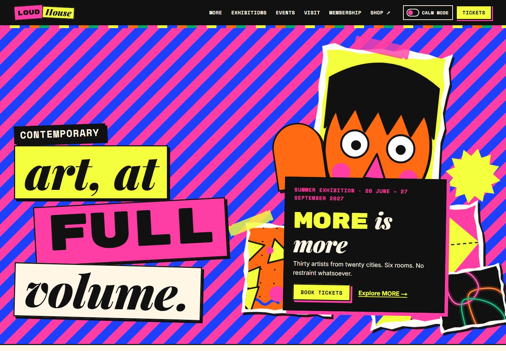

Design exploration / Maximalism
Loud House
A gallery identity turned up to full volume, with exhibition discovery, ticket booking, and calm mode.

The idea behind the interface.
A fictional east-London art gallery and its MORE exhibition microsite. Clashing patterns, collage, mixed typefaces, and saturated colour make the creative identity unmistakable, while quieter information panels keep visit planning clear.
Inside the build
- Exhibition and event pages use shared content structures and reusable art, collage, sticker, and information-panel components.
- A multi-step booking flow covers dates, entry slots, ticket quantities, visitor details, and a demo confirmation with a QR code.
- A persistent calm mode removes patterns, collage, and movement; visitor resources include sensory information and a large-print route.
Scope & context
Concept project. The gallery, artists, exhibitions, memberships, and ticketing data are fictional demonstrations rather than a live venue service.